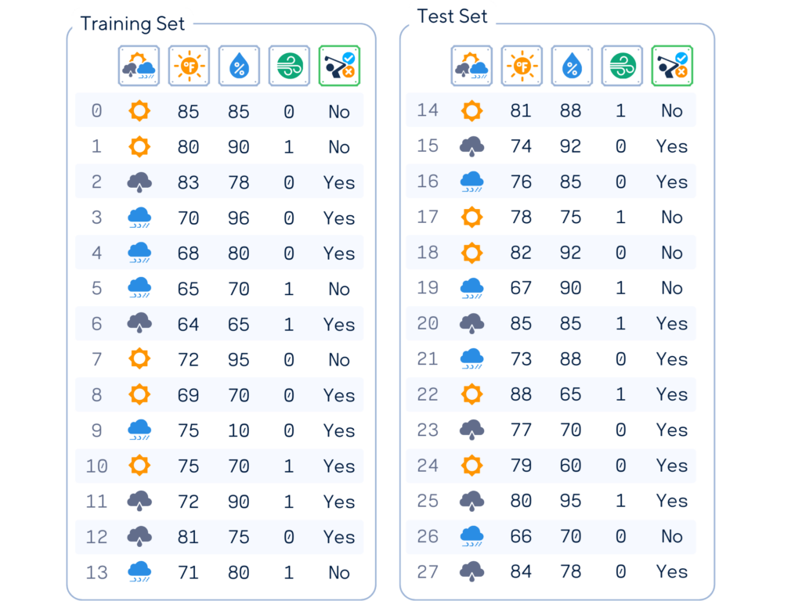
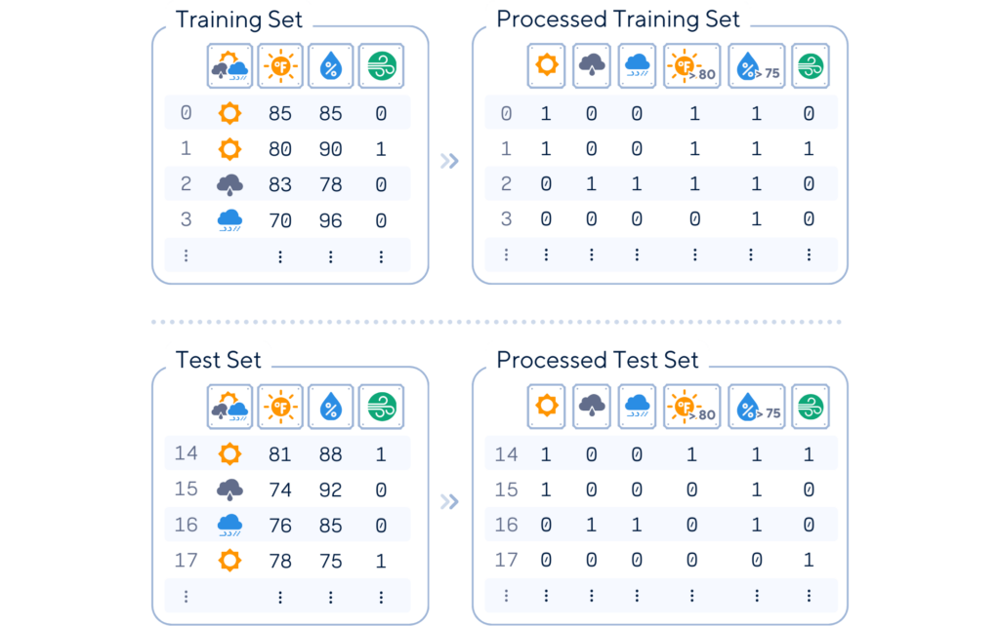
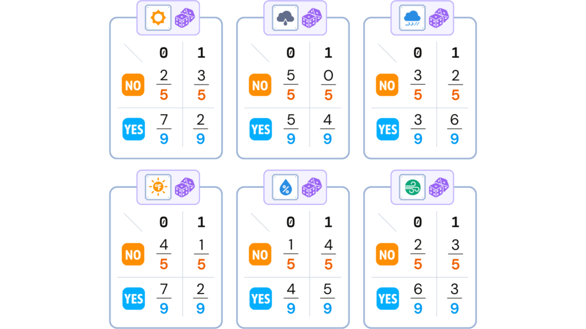
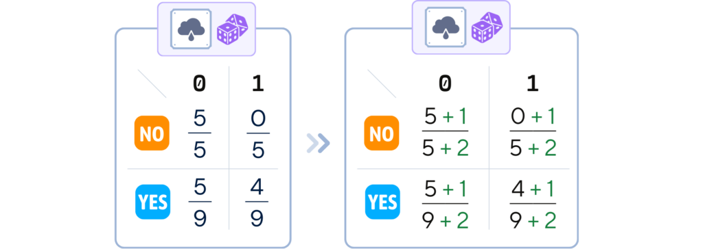
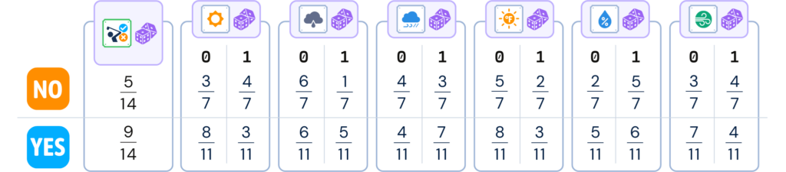

Unlocking predictive power through Yes/No probability
Samy Baladram
Unlike the baseline approach of dummy classifiers or the similarity-based reasoning of KNN, Naive Bayes leverages probability theory. It combines the individual probabilities of each "clue" (or feature) to make a final prediction. This straightforward yet powerful method has proven invaluable in various Machine Learning applications.
Naive Bayes is a machine learning algorithm that uses probability to classify data. It’s based on Bayes’ Theorem, a formula for calculating conditional probabilities. The "naive" part refers to its key assumption: it treats all features as independent of each other, even when they might not be in reality. This simplification, while often unrealistic, greatly reduces computational complexity and works well in many practical scenarios.
There are three main types of Naive Bayes classifiers. The key difference between these types lies in the assumption they make about the distribution of features:
Bernoulli NB assumes binary data, Multinomial NB works with discrete counts, and Gaussian NB handles continuous data assuming a normal distribution.
It is a good start to focus on the simplest one which is Bernoulli NB. The "Bernoulli" in its name comes from the assumption that each feature is binary-valued.
Throughout this article, we’ll use this artificial golf dataset (inspired by [1]) as an example. This dataset predicts whether a person will play golf based on weather conditions.
Columns: ‘Outlook’, ‘Temperature’ (in Fahrenheit), ‘Humidity’ (in %), ‘Wind’ and ‘Play’ (target feature)
# IMPORTING DATASET #
from sklearn.model_selection import train_test_split
from sklearn.metrics import accuracy_score
import pandas as pd
import numpy as np
dataset_dict = {
'Outlook': ['sunny', 'sunny', 'overcast', 'rain', 'rain', 'rain', 'overcast', 'sunny', 'sunny', 'rain', 'sunny', 'overcast', 'overcast', 'rain', 'sunny', 'overcast', 'rain', 'sunny', 'sunny', 'rain', 'overcast', 'rain', 'sunny', 'overcast', 'sunny', 'overcast', 'rain', 'overcast'],
'Temperature': [85.0, 80.0, 83.0, 70.0, 68.0, 65.0, 64.0, 72.0, 69.0, 75.0, 75.0, 72.0, 81.0, 71.0, 81.0, 74.0, 76.0, 78.0, 82.0, 67.0, 85.0, 73.0, 88.0, 77.0, 79.0, 80.0, 66.0, 84.0],
'Humidity': [85.0, 90.0, 78.0, 96.0, 80.0, 70.0, 65.0, 95.0, 70.0, 80.0, 70.0, 90.0, 75.0, 80.0, 88.0, 92.0, 85.0, 75.0, 92.0, 90.0, 85.0, 88.0, 65.0, 70.0, 60.0, 95.0, 70.0, 78.0],
'Wind': [False, True, False, False, False, True, True, False, False, False, True, True, False, True, True, False, False, True, False, True, True, False, True, False, False, True, False, False],
'Play': ['No', 'No', 'Yes', 'Yes', 'Yes', 'No', 'Yes', 'No', 'Yes', 'Yes', 'Yes', 'Yes', 'Yes', 'No', 'No', 'Yes', 'Yes', 'No', 'No', 'No', 'Yes', 'Yes', 'Yes', 'Yes', 'Yes', 'Yes', 'No', 'Yes']
}
df = pd.DataFrame(dataset_dict)
# ONE-HOT ENCODE 'Outlook' COLUMN
df = pd.get_dummies(df, columns=['Outlook'], prefix='', prefix_sep='', dtype=int)
# CONVERT 'Windy' (bool) and 'Play' (binary) COLUMNS TO BINARY INDICATORS
df['Wind'] = df['Wind'].astype(int)
df['Play'] = (df['Play'] == 'Yes').astype(int)
# Set feature matrix X and target vector y
X, y = df.drop(columns='Play'), df['Play']
# Split the data into training and testing sets
X_train, X_test, y_train, y_test = train_test_split(X, y, train_size=0.5, shuffle=False)
print(pd.concat([X_train, y_train], axis=1), end='nn')
print(pd.concat([X_test, y_test], axis=1))
We’ll adapt it slightly for Bernoulli Naive Bayes by converting our features to binary.
As all the data has to be in 0 & 1 format, the ‘Outlook’ is one-hot encoded while the Temperature is separated into ≤ 80 and > 80. Similarly, Humidity is separated into ≤ 75 and > 75.
# One-hot encode the categorized columns and drop them after, but do it separately for training and test sets # Define categories for 'Temperature' and 'Humidity' for training set X_train['Temperature'] = pd.cut(X_train['Temperature'], bins=[0, 80, 100], labels=['Warm', 'Hot']) X_train['Humidity'] = pd.cut(X_train['Humidity'], bins=[0, 75, 100], labels=['Dry', 'Humid']) # Similarly, define for the test set X_test['Temperature'] = pd.cut(X_test['Temperature'], bins=[0, 80, 100], labels=['Warm', 'Hot']) X_test['Humidity'] = pd.cut(X_test['Humidity'], bins=[0, 75, 100], labels=['Dry', 'Humid']) # One-hot encode the categorized columns one_hot_columns_train = pd.get_dummies(X_train[['Temperature', 'Humidity']], drop_first=True, dtype=int) one_hot_columns_test = pd.get_dummies(X_test[['Temperature', 'Humidity']], drop_first=True, dtype=int) # Drop the categorized columns from training and test sets X_train = X_train.drop(['Temperature', 'Humidity'], axis=1) X_test = X_test.drop(['Temperature', 'Humidity'], axis=1) # Concatenate the one-hot encoded columns with the original DataFrames X_train = pd.concat([one_hot_columns_train, X_train], axis=1) X_test = pd.concat([one_hot_columns_test, X_test], axis=1) print(pd.concat([X_train, y_train], axis=1), 'n') print(pd.concat([X_test, y_test], axis=1))
Bernoulli Naive Bayes operates on data where each feature is either 0 or 1.
For our golf dataset, a Bernoulli NB classifier look at the probability of each feature happening for each class (YES & NO) then make decision based on which class has higher chance.
The training process for Bernoulli Naive Bayes involves calculating probabilities from the training data:
1. Class Probability Calculation: For each class, calculate its probability: (Number of instances in this class) / (Total number of instances)
In our golf example, the algorithm would calculate how often golf is played overall.
from fractions import Fraction
def calc_target_prob(attr):
total_counts = attr.value_counts().sum()
prob_series = attr.value_counts().apply(lambda x: Fraction(x, total_counts).limit_denominator())
return prob_series
print(calc_target_prob(y_train))
2.Feature Probability Calculation: For each feature and each class, calculate:
For each weather condition (i.e., sunny), how often golf is played when it’s sunny and how often it’s not played when it’s sunny.
from fractions import Fraction
def sort_attr_label(attr, lbl):
return (pd.concat([attr, lbl], axis=1)
.sort_values([attr.name, lbl.name])
.reset_index()
.rename(columns={'index': 'ID'})
.set_index('ID'))
def calc_feature_prob(attr, lbl):
total_classes = lbl.value_counts()
counts = pd.crosstab(attr, lbl)
prob_df = counts.apply(lambda x: [Fraction(c, total_classes[x.name]).limit_denominator() for c in x])
return prob_df
print(sort_attr_label(y_train, X_train['sunny']))
print(calc_feature_prob(X_train['sunny'], y_train))

The same process is applied to all of the other features.
for col in X_train.columns:
print(calc_feature_prob(X_train[col], y_train), "n")
3.Smoothing (Optional): Add a small value (usually 1) to the numerator and denominator of each probability calculation to avoid zero probabilities
We add 1 to all numerators, and add 2 to all denominators, to keep the total class probability 1.
# In sklearn, all processes above is summarized in this 'fit' method:
from sklearn.naive_bayes import BernoulliNB
nb_clf = BernoulliNB(alpha=1)
nb_clf.fit(X_train, y_train)
4. Store Results: Save all calculated probabilities for use during classification.
Smoothing is already applied to all feature probabilities. We will use these tables to make predictions.
Các bước phân loại
Given a new instance with features that are either 0 or 1:
1. Probability Collection: For each possible class:
For ID 14, we select the probabilities of each of the feature (either 0 or 1) happening.
2. Score Calculation & Prediction: For each class:
After multiplying the class probability and all of the feature probabilities, we select the class that has the higher score.
y_pred = nb_clf.predict(X_test)
print(y_pred)
This simple probabilistic model give a great accuracy for this simple dataset.
# Evaluate the classifier
print(f"Accuracy: {accuracy_score(y_test, y_pred)}")
Bernoulli Naive Bayes has a few important parameters:
For BernoulliNB in scikit-learn, numerical features are often standardized rather than manually binarized. The model then internally converts these standardized values to binary, usually using 0 (the mean) as the threshold.
For our golf dataset, we might start with the default α=1.0, no binarization (since we’ve already made our features binary), and fit_prior=True.
Like any algorithm in machine learning, Bernoulli Naive Bayes has its strengths and limitations.
The Bernoulli Naive Bayes classifier is a simple yet powerful machine learning algorithm for binary classification. It excels in text analysis and spam detection, where features are typically binary. Known for its speed and efficiency, this probabilistic model performs well with small datasets and high-dimensional spaces.
Despite its naive assumption of feature independence, it often rivals more complex models in accuracy. Bernoulli Naive Bayes serves as an excellent baseline and real-time classification tool.
# Import needed libraries
import pandas as pd
from sklearn.naive_bayes import BernoulliNB
from sklearn.preprocessing import StandardScaler
from sklearn.metrics import accuracy_score
from sklearn.model_selection import train_test_split
# Load the dataset
dataset_dict = {
'Outlook': ['sunny', 'sunny', 'overcast', 'rainy', 'rainy', 'rainy', 'overcast', 'sunny', 'sunny', 'rainy', 'sunny', 'overcast', 'overcast', 'rainy', 'sunny', 'overcast', 'rainy', 'sunny', 'sunny', 'rainy', 'overcast', 'rainy', 'sunny', 'overcast', 'sunny', 'overcast', 'rainy', 'overcast'],
'Temperature': [85.0, 80.0, 83.0, 70.0, 68.0, 65.0, 64.0, 72.0, 69.0, 75.0, 75.0, 72.0, 81.0, 71.0, 81.0, 74.0, 76.0, 78.0, 82.0, 67.0, 85.0, 73.0, 88.0, 77.0, 79.0, 80.0, 66.0, 84.0],
'Humidity': [85.0, 90.0, 78.0, 96.0, 80.0, 70.0, 65.0, 95.0, 70.0, 80.0, 70.0, 90.0, 75.0, 80.0, 88.0, 92.0, 85.0, 75.0, 92.0, 90.0, 85.0, 88.0, 65.0, 70.0, 60.0, 95.0, 70.0, 78.0],
'Wind': [False, True, False, False, False, True, True, False, False, False, True, True, False, True, True, False, False, True, False, True, True, False, True, False, False, True, False, False],
'Play': ['No', 'No', 'Yes', 'Yes', 'Yes', 'No', 'Yes', 'No', 'Yes', 'Yes', 'Yes', 'Yes', 'Yes', 'No', 'No', 'Yes', 'Yes', 'No', 'No', 'No', 'Yes', 'Yes', 'Yes', 'Yes', 'Yes', 'Yes', 'No', 'Yes']
}
df = pd.DataFrame(dataset_dict)
# Prepare data for model
df = pd.get_dummies(df, columns=['Outlook'], prefix='', prefix_sep='', dtype=int)
df['Wind'] = df['Wind'].astype(int)
df['Play'] = (df['Play'] == 'Yes').astype(int)
# Split data into training and testing sets
X, y = df.drop(columns='Play'), df['Play']
X_train, X_test, y_train, y_test = train_test_split(X, y, train_size=0.5, shuffle=False)
# Scale numerical features (for automatic binarization)
scaler = StandardScaler()
float_cols = X_train.select_dtypes(include=['float64']).columns
X_train[float_cols] = scaler.fit_transform(X_train[float_cols])
X_test[float_cols] = scaler.transform(X_test[float_cols])
# Train the model
nb_clf = BernoulliNB()
nb_clf.fit(X_train, y_train)
# Make predictions
y_pred = nb_clf.predict(X_test)
# Check accuracy
print(f"Accuracy: {accuracy_score(y_test, y_pred)}")
Next